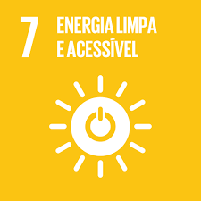
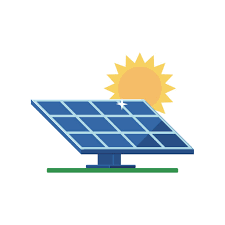
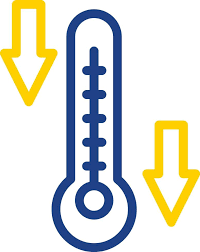
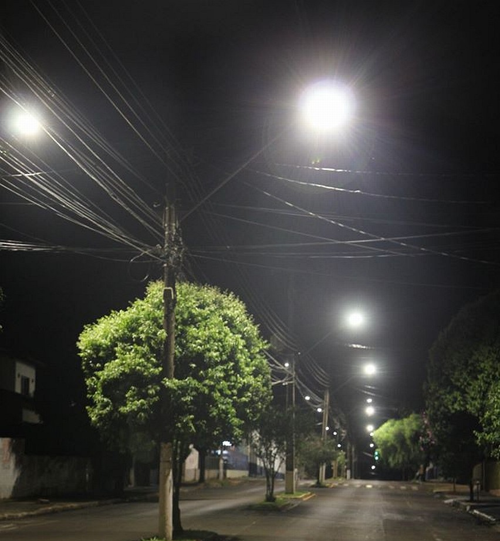
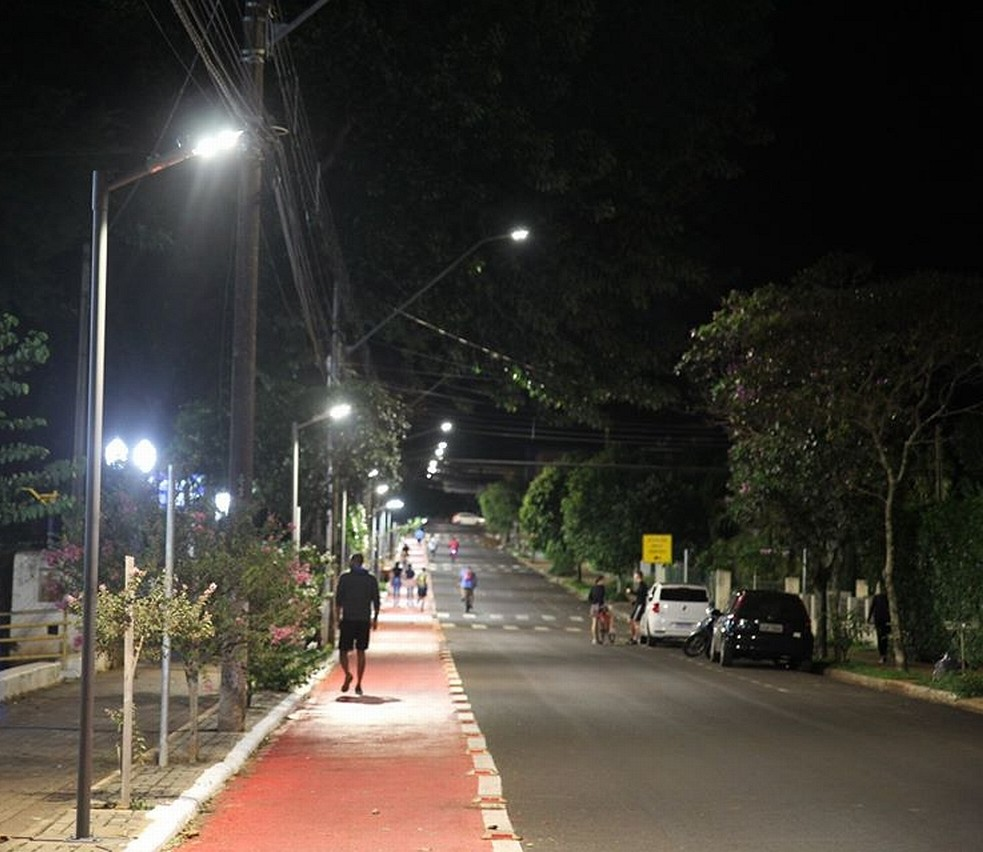
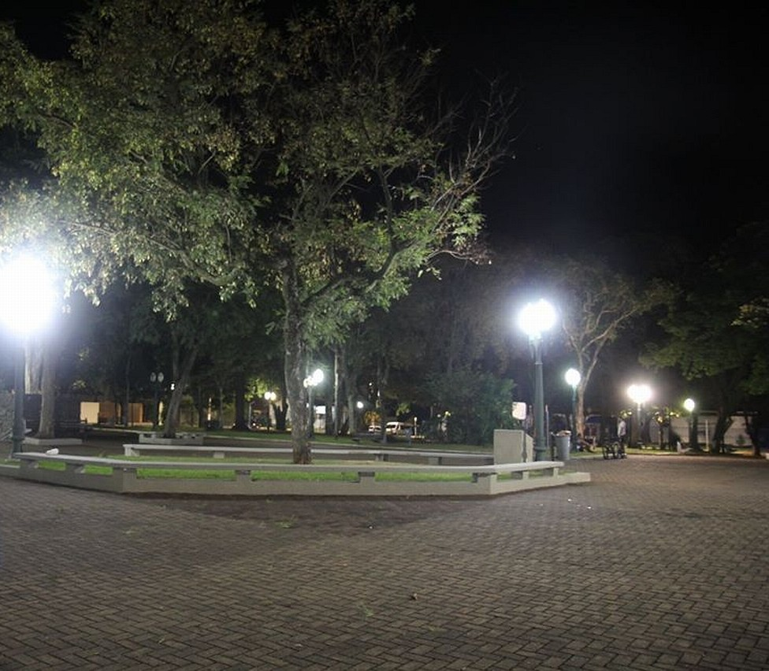
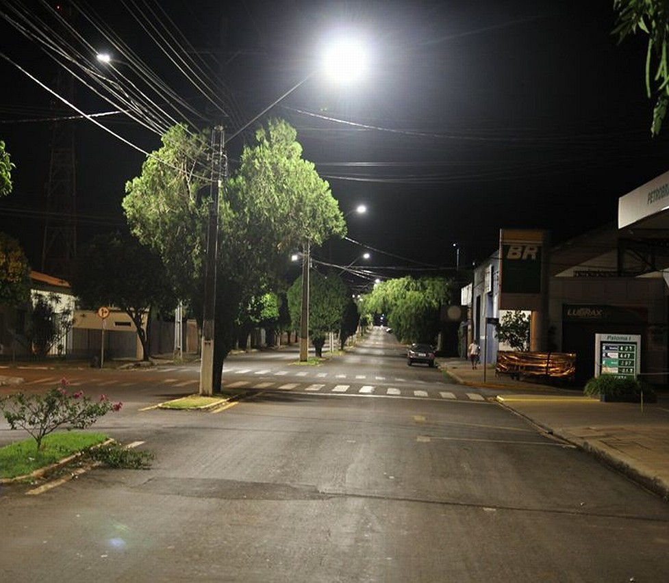

O que é a ODS 7?
O Objetivo de Desenvolvimento Sustentável 7 visa garantir o acesso a fontes de energia confiáveis, sustentáveis, modernas e a preços acessíveis para todos as pessoas. No ambiente urbano, isso se traduz em eficiência no consumo e transição para matrizes limpas.

Nossos Pilares de Atuação
Eficiência Energética
Substituir lâmpadas incandescentes por LED e retirar aparelhos do modo stand-by gera economia imediata na conta local.

Energia Renovável
Incentivamos e mapeamos projetos comunitários para a implementação de microgeradores solares em telhados de bairros periféricos.

Poço Canadense
Uma solução bioclimática que utiliza a temperatura do subsolo para climatizar ambientes de forma natural, reduzindo drasticamente o consumo de energia elétrica.
Educação Ambiental
Oficinas práticas gratuitas para capacitar eletricistas e moradores sobre instalações elétricas seguras e otimizadas.
Transformação em Foco
Veja os impactos de pequenos projetos de iluminação pública fornecendo segurança, visibilidade e principalmente eficiência energética.



